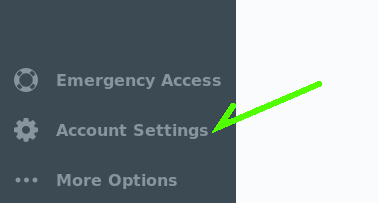
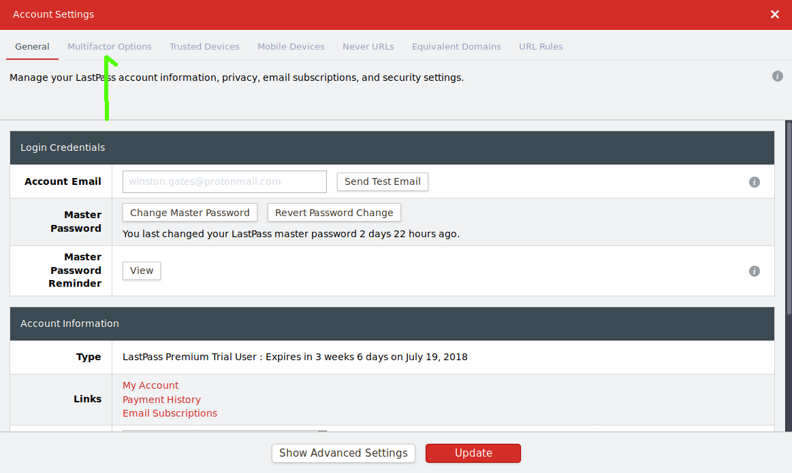
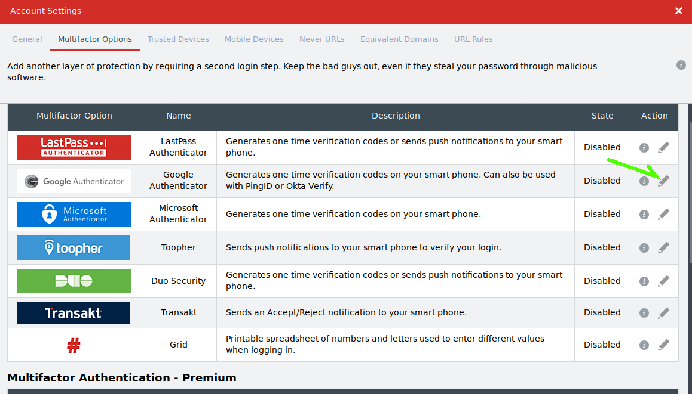
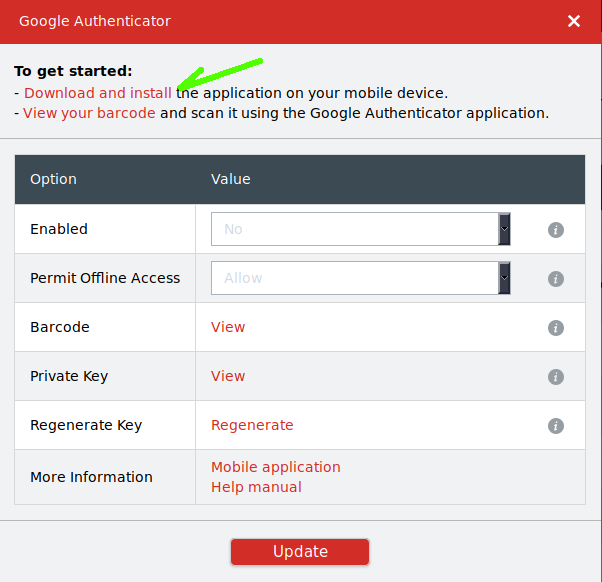
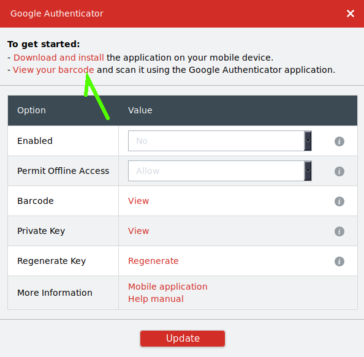
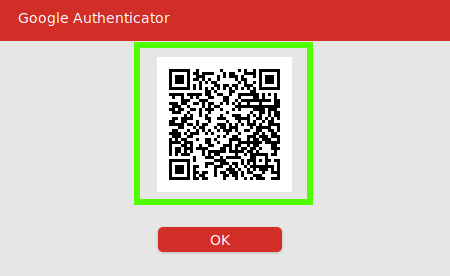
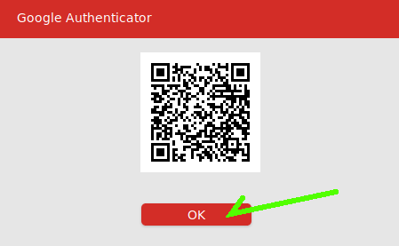
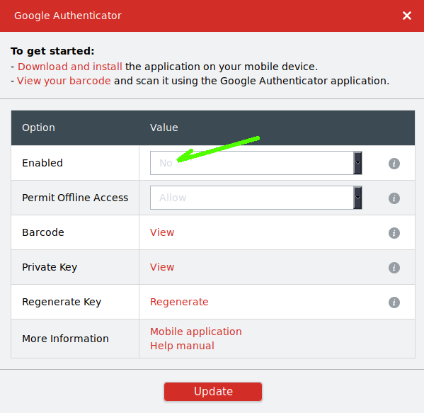
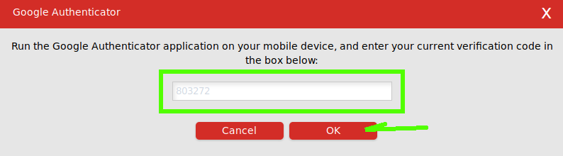
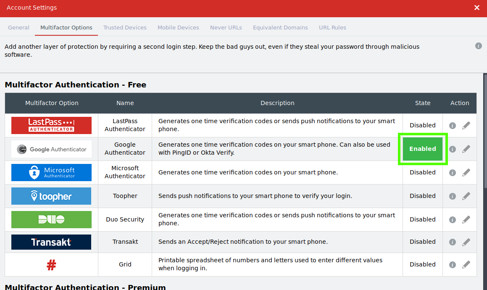

Two factor authentication is meant to require the user to be in possession of some object which will prove the users identity at the time of authentication. Some example two factor schemes include:
Some of these are better than others, some are not really two factor at all. How would your group attempt to attack an organization using these two factor methods?
Earlier we mentioned that LastPass's master password is a single point of failure in our personal security scheme. Let's beef that up some.
From the LastPass plugin click on "Open My Vault" .Once in your vault click on "Account Settings" in the lower left portion of the screen.

When the account settings window opens click on "Multifactor Options"

This will open the Multifactor Options page. Let's use Google Authenticator as it seems to work with the largest number of other sites. Click the pencil to the far right to edit the settings for Google Authenticator.

You'll need to download and install the Authenticator App (if you don't have it already) there is a link at the top of the window that will help you to get this done for whatever device type you have. Please ask instructors if you get stuck.

Once you have the app installed click on the "View your barcode" link.

Before you're able to view your barcode, you'll need to nput your master passphrase again, then a barcode will come up like the one below.
Open the Google Authenticator app on your phone and click the '+' button on the bottom right. Select 'scan a barcode' and scan the barcode that is showing on your screen.

Once you've scanned the barcode with your phone you'll see a new entry in Google Authenticator for LastPass. Go hit the OK button on the barcode window in LastPass.

Change the 'Enabled' to 'Yes' and hit update. You'll need to re-enter your master password again.

Next you'll need to open Google Authenticator on your phone, and input the number that is currently displayed on the screen into the box. You'll also have to do this whenever you log into LastPass from now on.

You should now see a green "Enabled" next to Google Authenticator. Congratulations! You've added a nice thick layer of security to your LastPass passphrase manager.
